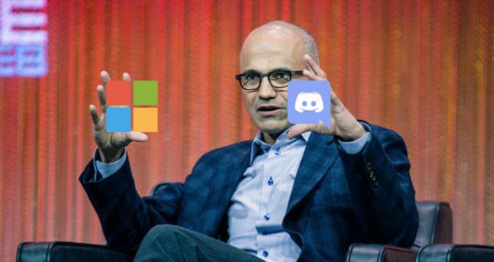

Arpitha Vinod arpithav@teenhacksli.com
Discord , your favorite gaming communication app may be on its way to be bought by tech giant Microsoft for a whopping price of $10 billion. Considering that four billion minutes of conversation happen on Discord each day and its current user base is over 150 million people , Discord has grown tremendously since its launch in 2015. So, why is Microsoft so keen on securing their bag on Discord?
The number one reason is Microsoft’s longing for a consumer-facing community , other than Xbox. Its main competitors all have their own large community— Google has YouTube, Amazon has Twitch, Facebook has Whatsapp and Instagram, and Apple even dominates the mobile industry with the App store. As CEO Satya Nadella puts it, “Creation, creation, creation— the next 10 years is going to be as much about creation as it is about consumption and about the community around it, so it’s not creating alone.”
While Microsoft did successfully acquire LinkedIn and GitHub in the past, Discord would open the door for them to an engaged and active community of content creators, gamers, and YouTubers. It would also increase Microsoft’s presence in the gaming industry, especially seeing the recent growing trends for eSports . Esports is the world of competitive and orderly video gaming; some of the most popular games include Fortnite, Call of Duty, Overwatch, and League of Legends.
Getting deja vu? That’s right— this deal is super similar to when Amazon bought Twitch in 2014 . Now, Twitch holds 91% of all video game streaming and at any point of the day, there are at least 2 million viewers on Twitch! Amazon and Twitch mutually benefited from this undertaking— Amazon could convince Twitch users to sign up for Prime while also convincing Prime users to use Twitch. Microsoft seems to want to use the same tactic with Discord— Microsoft could convince Discord users to sign up for Xbox Game Pass , while convincing Game Pass users to sign up for Discord’s premium feature Nitro .
It is important to note, however, that Microsoft meddled with the gaming industry in the past and terribly failed . In 2017, Microsoft acquired Mixer , a video game streaming platform for $30 million. However, they had to permanently shut down Mixer as a result of little engagement and barely any viewers. How can Microsoft avoid these same mistakes?
First of all, Discord is known for its easy to access platform with few censorship and restrictions. Discord users’ main concern with Microsoft's potential acquisition is that the app will become more business-like and less of the chill gaming hub we all love. After all, in the past Discord rejected $2-6 billion offers from undisclosed companies because they wanted to incorporate more advertising and alter the fundamental values of Discord. As a result, if Microsoft doesn’t disrupt the current vibe of Discord and keep users happy while still adhering to the tech giants’ own tech-safe guidelines, it can definitely see a future in the gaming industry and expand opportunities for Discord.


{kind=link}